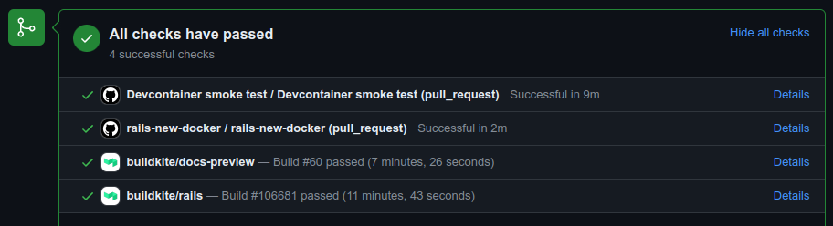
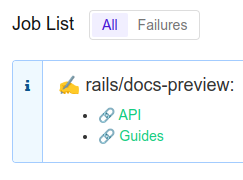

1 Reportando un Problema
Ruby on Rails utiliza Seguimiento de Problemas de GitHub para rastrear problemas (principalmente errores y contribuciones de nuevo código). Si has encontrado un error en Ruby on Rails, este es el lugar para comenzar. Necesitarás crear una cuenta gratuita de GitHub para enviar un problema, comentar sobre problemas o crear solicitudes de extracción.
NOTA: Los errores en la versión más reciente de Ruby on Rails probablemente recibirán más atención. Además, el equipo central de Rails siempre está interesado en recibir comentarios de aquellos que pueden tomarse el tiempo para probar edge Rails (el código para la versión de Rails que está actualmente en desarrollo). Más adelante en esta guía, descubrirás cómo obtener edge Rails para pruebas. Consulta nuestra política de mantenimiento para obtener información sobre qué versiones están soportadas. Nunca reportes un problema de seguridad en el rastreador de problemas de GitHub.
1.1 Creando un Informe de Error
Si has encontrado un problema en Ruby on Rails que no es un riesgo de seguridad, busca en los Problemas en GitHub, por si ya ha sido reportado. Si no puedes encontrar ningún problema abierto en GitHub que aborde el problema que encontraste, tu próximo paso será abrir un nuevo problema. (Consulta la siguiente sección para informar problemas de seguridad).
Hemos proporcionado una plantilla de problemas para que cuando crees un problema incluyas toda la información necesaria para determinar si hay un error en el framework. Cada problema debe incluir un título y una descripción clara del problema. Asegúrate de incluir tanta información relevante como sea posible, incluyendo un ejemplo de código o una prueba fallida que demuestre el comportamiento esperado, así como tu configuración del sistema. Tu objetivo debe ser facilitarte a ti mismo, y a otros, reproducir el error y encontrar una solución.
Una vez que abras un problema, puede que no vea actividad de inmediato a menos que sea un tipo de error "Código Rojo, Misión Crítica, el Mundo se Está Acabando". Eso no significa que no nos importe tu error, solo que hay muchos problemas y solicitudes de extracción por revisar. Otras personas con el mismo problema pueden encontrar tu problema, confirmar el error y pueden colaborar contigo para solucionarlo. Si sabes cómo solucionar el error, adelante, abre una solicitud de extracción.
1.2 Crear un Caso de Prueba Ejecutable
Tener una forma de reproducir tu problema ayudará a las personas a confirmarlo, investigarlo y, en última instancia, solucionarlo. Puedes hacer esto proporcionando un caso de prueba ejecutable. Para facilitar este proceso, hemos preparado varias plantillas de informes de errores para que las uses como punto de partida:
- Plantilla para problemas de Active Record (modelos, base de datos): enlace
- Plantilla para problemas de pruebas de Active Record (migración): enlace
- Plantilla para problemas de Action Pack (controladores, enrutamiento): enlace
- Plantilla para problemas de Action View (vistas, ayudantes): enlace
- Plantilla para problemas de Active Job: enlace
- Plantilla para problemas de Active Storage: enlace
- Plantilla para problemas de Action Mailer: enlace
- Plantilla para problemas de Action Mailbox: enlace
- Plantilla genérica para otros problemas: enlace
Estas plantillas incluyen el código base para configurar un caso de prueba. Copia el contenido de la plantilla adecuada en un archivo .rb y haz los cambios necesarios para demostrar el problema. Puedes ejecutarlo ejecutando ruby the_file.rb en tu terminal. Si todo va bien, deberías ver que tu caso de prueba falla.
Luego puedes compartir tu caso de prueba ejecutable como un gist o pegar el contenido en la descripción del problema.
1.3 Tratamiento Especial para Problemas de Seguridad
ADVERTENCIA: Por favor, no informes vulnerabilidades de seguridad con informes de problemas públicos de GitHub. La página de política de seguridad de Rails detalla el procedimiento a seguir para problemas de seguridad.
1.4 ¿Qué hay de las Solicitudes de Funciones?
Por favor, no pongas elementos de "solicitud de función" en los Problemas de GitHub. Si hay una nueva función que deseas ver añadida a Ruby on Rails, tendrás que escribir el código tú mismo o convencer a alguien más para que se asocie contigo para escribir el código. Más adelante en esta guía, encontrarás instrucciones detalladas para proponer un parche para Ruby on Rails. Si ingresas un elemento de lista de deseos en los Problemas de GitHub sin código, puedes esperar que se marque como "inválido" tan pronto como se revise.
A veces, la línea entre 'error' y 'función' es difícil de trazar. Generalmente, una función es cualquier cosa que agrega un nuevo comportamiento, mientras que un error es cualquier cosa que causa un comportamiento incorrecto. A veces, el equipo central tendrá que tomar una decisión de juicio. Dicho esto, la distinción generalmente determina con qué parche se lanza tu cambio; ¡nos encantan las presentaciones de funciones! Simplemente no se retroportarán a las ramas de mantenimiento.
Si deseas recibir comentarios sobre una idea para una función antes de hacer el trabajo para crear un parche, por favor comienza una discusión en el tablero de discusión de rails-core. Es posible que no recibas respuesta, lo que significa que todos son indiferentes. Puedes encontrar a alguien que también esté interesado en construir esa función. Puedes recibir un "Esto no será aceptado". Pero es el lugar adecuado para discutir nuevas ideas. Los Problemas de GitHub no son un lugar particularmente bueno para las discusiones a veces largas e involucradas que requieren las nuevas funciones.
2 Ayudando a Resolver Problemas Existentes
Más allá de reportar problemas, puedes ayudar al equipo central a resolver los existentes proporcionando comentarios sobre ellos. Si eres nuevo en el desarrollo central de Rails, proporcionar comentarios te ayudará a familiarizarte con la base de código y los procesos.
Si revisas la lista de problemas en Problemas de GitHub, encontrarás muchos problemas que ya requieren atención. ¿Qué puedes hacer al respecto? Bastante, en realidad:
2.1 Verificando Informes de Errores
Para empezar, ayuda simplemente verificar los informes de errores. ¿Puedes reproducir el problema reportado en tu computadora? Si es así, puedes agregar un comentario al problema diciendo que estás viendo lo mismo.
Si un problema es muy vago, ¿puedes ayudar a reducirlo a algo más específico? Tal vez puedas proporcionar información adicional para reproducir el error, o tal vez puedas eliminar pasos innecesarios que no son necesarios para demostrar el problema.
Si encuentras un informe de error sin una prueba, es muy útil contribuir con una prueba fallida. Esta también es una gran manera de explorar el código fuente: mirar los archivos de prueba existentes te enseñará cómo escribir más pruebas. Las nuevas pruebas se contribuyen mejor en forma de parche, como se explica más adelante en la sección Contribuyendo al Código de Rails.
Cualquier cosa que puedas hacer para hacer que los informes de errores sean más concisos o fáciles de reproducir ayuda a las personas que intentan escribir código para solucionar esos errores, ya sea que termines escribiendo el código tú mismo o no.
2.2 Probando Parches
También puedes ayudar examinando las solicitudes de extracción que se han enviado a Ruby on Rails a través de GitHub. Para aplicar los cambios de alguien, primero crea una rama dedicada:
$ git checkout -b testing_branch
Luego, puedes usar su rama remota para actualizar tu base de código. Por ejemplo, digamos que el usuario de GitHub JohnSmith ha bifurcado y subido a una rama de tema "orange" ubicada en https://github.com/JohnSmith/rails.
$ git remote add JohnSmith https://github.com/JohnSmith/rails.git
$ git pull JohnSmith orange
Una alternativa a agregar su remoto a tu checkout es usar la herramienta CLI de GitHub para verificar su solicitud de extracción.
Después de aplicar su rama, ¡pruébala! Aquí hay algunas cosas en las que pensar:
- ¿El cambio realmente funciona?
- ¿Estás contento con las pruebas? ¿Puedes seguir lo que están probando? ¿Faltan pruebas?
- ¿Tiene la cobertura de documentación adecuada? ¿Debería actualizarse la documentación en otro lugar?
- ¿Te gusta la implementación? ¿Puedes pensar en una manera más agradable o rápida de implementar una parte de su cambio?
Una vez que estés satisfecho de que la solicitud de extracción contiene un buen cambio, comenta en el problema de GitHub indicando tus hallazgos. Tu comentario debe indicar que te gusta el cambio y qué te gusta de él. Algo como:
Me gusta la forma en que has reestructurado ese código en generate_finder_sql, mucho más agradable. Las pruebas también se ven bien.
Si tu comentario simplemente dice "+1", es probable que otros revisores no lo tomen muy en serio. Demuestra que te tomaste el tiempo para revisar la solicitud de extracción.
3 Contribuyendo a la Documentación de Rails
Ruby on Rails tiene dos conjuntos principales de documentación: las guías, que te ayudan a aprender sobre Ruby on Rails, y la API, que sirve como referencia.
Puedes ayudar a mejorar las guías de Rails o la referencia de la API haciéndolas más coherentes, consistentes o legibles, agregando información faltante, corrigiendo errores factuales, corrigiendo errores tipográficos o actualizándolas con la última versión de edge Rails.
Para hacerlo, realiza cambios en los archivos fuente de las guías de Rails (ubicados aquí en GitHub) o comentarios RDoc en el código fuente. Luego abre una solicitud de extracción para aplicar tus cambios a la rama principal.
Usa [ci skip] en el título de tu solicitud de extracción para evitar ejecutar la construcción de CI para cambios en la documentación.
Una vez que abras una PR, se implementará una vista previa de la documentación para facilitar la revisión y colaboración. Al final de la página de la Solicitud de Extracción, deberías ver una lista de verificaciones de estado, busca buildkite/docs-preview y haz clic en "detalles".

Esto te llevará a la página de construcción de Buildkite, si el trabajo fue exitoso habrá una anotación con enlaces a la API generada y Guías sobre la lista de trabajos.

Al trabajar con documentación, ten en cuenta las Guías de Documentación de la API y las Guías de Ruby on Rails.
4 Traduciendo las Guías de Rails
Estamos encantados de que la gente se ofrezca como voluntaria para traducir las guías de Rails. Solo sigue estos pasos:
- Bifurca https://github.com/rails/rails.
- Agrega una carpeta de origen para tu idioma, por ejemplo: guides/source/it-IT para italiano.
- Copia el contenido de guides/source en tu directorio de idioma y tradúcelos.
- NO traduzcas los archivos HTML, ya que se generan automáticamente.
Ten en cuenta que las traducciones no se envían al repositorio de Rails; tu trabajo vive en tu bifurcación, como se describe anteriormente. Esto se debe a que, en la práctica, el mantenimiento de la documentación a través de parches solo es sostenible en inglés.
Para generar las guías en formato HTML, necesitarás instalar las dependencias de las guías, cd en el directorio guides, y luego ejecutar (por ejemplo, para it-IT):
# solo instala gemas necesarias para las guías. Para deshacer, ejecuta: bundle config --delete without
$ bundle install --without job cable storage test db
$ cd guides/
$ bundle exec rake guides:generate:html GUIDES_LANGUAGE=it-IT
Esto generará las guías en un directorio output.
NOTA: La gema Redcarpet no funciona con JRuby.
5 Contribuyendo al Código de Rails
5.1 Configurando un Entorno de Desarrollo
Para pasar de enviar errores a ayudar a resolver problemas existentes o contribuir con tu propio código a Ruby on Rails, debes poder ejecutar su conjunto de pruebas. En esta sección de la guía, aprenderás cómo configurar las pruebas en tu computadora.
5.1.1 Usando GitHub Codespaces
Si eres miembro de una organización que tiene habilitado codespaces, puedes bifurcar Rails en esa organización y usar codespaces en GitHub. El Codespace se inicializará con todas las dependencias necesarias y te permitirá ejecutar todas las pruebas.
5.1.2 Usando Contenedores Remotos de VS Code
Si tienes Visual Studio Code y Docker instalados, puedes usar el plugin de contenedores remotos de VS Code. El plugin leerá la configuración de .devcontainer en el repositorio y construirá el contenedor Docker localmente.
5.1.3 Usando Dev Container CLI
Alternativamente, con Docker y npm instalados, puedes ejecutar Dev Container CLI para utilizar la configuración de .devcontainer desde la línea de comandos.
$ npm install -g @devcontainers/cli
$ cd rails
$ devcontainer up --workspace-folder .
$ devcontainer exec --workspace-folder . bash
5.1.4 Usando rails-dev-box
También es posible usar el rails-dev-box para obtener un entorno de desarrollo listo. Sin embargo, el rails-dev-box utiliza Vagrant y Virtual Box, que no funcionarán en Macs con silicio de Apple.
5.1.5 Desarrollo Local
Cuando no puedas usar GitHub Codespaces, consulta esta otra guía sobre cómo configurar el desarrollo local. Esto se considera la forma difícil porque la instalación de dependencias puede ser específica del sistema operativo.
5.2 Clonar el Repositorio de Rails
Para poder contribuir con código, necesitas clonar el repositorio de Rails:
$ git clone https://github.com/rails/rails.git
y crear una rama dedicada:
$ cd rails
$ git checkout -b my_new_branch
No importa mucho qué nombre uses porque esta rama solo existirá en tu computadora local y en tu repositorio personal en GitHub. No será parte del repositorio Git de Rails.
5.3 Instalar Bundle
Instala las gemas requeridas.
$ bundle install
5.4 Ejecutar una Aplicación Contra tu Rama Local
En caso de que necesites una aplicación Rails ficticia para probar cambios, el flag --dev de rails new genera una aplicación que usa tu rama local:
$ cd rails
$ bundle exec rails new ~/my-test-app --dev
La aplicación generada en ~/my-test-app se ejecuta contra tu rama local y, en particular, ve cualquier modificación al reiniciar el servidor.
Para paquetes de JavaScript, puedes usar yarn link para obtener tu rama local en una aplicación generada:
$ cd rails/activestorage
$ yarn link
$ cd ~/my-test-app
$ yarn link "@rails/activestorage"
5.5 Escribir tu Código
Ahora es el momento de escribir algo de código. Al hacer cambios para Rails, aquí hay algunas cosas a tener en cuenta:
- Sigue el estilo y las convenciones de Rails.
- Usa los modismos y ayudantes de Rails.
- Incluye pruebas que fallen sin tu código y pasen con él.
- Actualiza la documentación (alrededor), ejemplos en otros lugares y las guías: cualquier cosa que se vea afectada por tu contribución.
- Si el cambio agrega, elimina o cambia una función, asegúrate de incluir una entrada en el CHANGELOG. Si tu cambio es una corrección de errores, no es necesario una entrada en el CHANGELOG.
CONSEJO: Los cambios que son cosméticos y no agregan nada sustancial a la estabilidad, funcionalidad o capacidad de prueba de Rails generalmente no serán aceptados (lee más sobre nuestra razón detrás de esta decisión).
5.5.1 Sigue las Convenciones de Codificación
Rails sigue un conjunto simple de convenciones de estilo de codificación:
- Dos espacios, sin tabulaciones (para la sangría).
- Sin espacios en blanco al final. Las líneas en blanco no deben tener espacios.
- Indentar y no dejar línea en blanco después de private/protected.
- Usa la sintaxis de Ruby >= 1.9 para hashes. Prefiere
{ a: :b }sobre{ :a => :b }. - Prefiere
&&/||sobreand/or. - Prefiere
class << selfsobreself.methodpara métodos de clase. - Usa
my_method(my_arg)nomy_method( my_arg )omy_method my_arg. - Usa
a = by noa=b. - Usa métodos
assert_noten lugar derefute. - Prefiere
method { do_stuff }en lugar demethod{do_stuff}para bloques de una sola línea. - Sigue las convenciones en el código fuente que ya ves usadas.
Los anteriores son lineamientos: por favor, usa tu mejor juicio al usarlos.
Además, tenemos reglas de RuboCop definidas para codificar algunas de nuestras convenciones de codificación. Puedes ejecutar RuboCop localmente contra el archivo que has modificado antes de enviar una solicitud de extracción:
$ bundle exec rubocop actionpack/lib/action_controller/metal/strong_parameters.rb
Inspecting 1 file
.
1 file inspected, no offenses detected
5.6 Mide el Rendimiento de tu Código
Para cambios que podrían tener un impacto en el rendimiento, por favor mide el rendimiento de tu código y mide el impacto. Deberías considerar incluir esta información en tu mensaje de commit, para permitir que futuros colaboradores verifiquen fácilmente tus hallazgos y determinen si aún son relevantes. (Por ejemplo, futuras optimizaciones en la VM de Ruby podrían hacer innecesarias ciertas optimizaciones).
Cuando optimices para un escenario específico que te importa, es fácil perjudicar el rendimiento en otros casos comunes. Por lo tanto, debes probar tu cambio contra una lista de escenarios representativos, idealmente extraídos de aplicaciones de producción del mundo real.
Puedes usar la plantilla de benchmark como punto de partida. Incluye el código base para configurar un benchmark usando la gema benchmark-ips. La plantilla está diseñada para probar cambios relativamente autónomos que se pueden integrar en el script.
5.7 Ejecutando Pruebas
No es costumbre en Rails ejecutar el conjunto completo de pruebas antes de enviar cambios. El conjunto de pruebas de railties, en particular, toma mucho tiempo, y tomará un tiempo especialmente largo si el código fuente está montado en /vagrant como sucede en el flujo de trabajo recomendado con el rails-dev-box.
Como compromiso, prueba lo que tu código obviamente afecta, y si el cambio no está en railties, ejecuta todo el conjunto de pruebas del componente afectado. Si todas las pruebas pasan, eso es suficiente para proponer tu contribución. Tenemos Buildkite como una red de seguridad para detectar fallos inesperados en otros lugares.
5.7.1 Todo Rails:
Para ejecutar todas las pruebas, haz:
$ cd rails
$ bundle exec rake test
5.7.2 Para un Componente Particular
Puedes ejecutar pruebas solo para un componente particular (por ejemplo, Action Pack). Por ejemplo, para ejecutar pruebas de Action Mailer:
$ cd actionmailer
$ bin/test
5.7.3 Para un Directorio Específico
Puedes ejecutar pruebas solo para un directorio específico de un componente particular (por ejemplo, modelos en Active Storage). Por ejemplo, para ejecutar pruebas en /activestorage/test/models:
$ cd activestorage
$ bin/test models
5.7.4 Para un Archivo Específico
Puedes ejecutar las pruebas para un archivo particular:
$ cd actionview
$ bin/test test/template/form_helper_test.rb
5.7.5 Ejecutando una Sola Prueba
Puedes ejecutar una sola prueba por nombre usando la opción -n:
$ cd actionmailer
$ bin/test test/mail_layout_test.rb -n test_explicit_class_layout
5.7.6 Para una Línea Específica
Averiguar el nombre no siempre es fácil, pero si conoces el número de línea en el que comienza tu prueba, esta opción es para ti:
$ cd railties
$ bin/test test/application/asset_debugging_test.rb:69
5.7.7 Ejecutando Pruebas con una Semilla Específica
La ejecución de pruebas se randomiza con una semilla de randomización. Si estás experimentando fallos de prueba aleatorios, puedes reproducir más precisamente un escenario de prueba fallido configurando específicamente la semilla de randomización.
Ejecutando todas las pruebas para un componente:
$ cd actionmailer
$ SEED=15002 bin/test
Ejecutando un solo archivo de prueba:
$ cd actionmailer
$ SEED=15002 bin/test test/mail_layout_test.rb
5.7.8 Ejecutando Pruebas en Serie
Las pruebas unitarias de Action Pack y Action View se ejecutan en paralelo por defecto. Si estás experimentando fallos de prueba aleatorios, puedes configurar la semilla de randomización y dejar que estas pruebas unitarias se ejecuten en serie configurando PARALLEL_WORKERS=1
$ cd actionview
$ PARALLEL_WORKERS=1 SEED=53708 bin/test test/template/test_case_test.rb
5.7.9 Probando Active Record
Primero, crea las bases de datos que necesitarás. Puedes encontrar una lista de los nombres de tablas requeridos, nombres de usuario y contraseñas en activerecord/test/config.example.yml.
Para MySQL y PostgreSQL, es suficiente ejecutar:
$ cd activerecord
$ bundle exec rake db:mysql:build
O:
$ cd activerecord
$ bundle exec rake db:postgresql:build
Esto no es necesario para SQLite3.
Así es como ejecutas el conjunto de pruebas de Active Record solo para SQLite3:
$ cd activerecord
$ bundle exec rake test:sqlite3
Ahora puedes ejecutar las pruebas como lo hiciste para sqlite3. Las tareas son respectivamente:
$ bundle exec rake test:mysql2
$ bundle exec rake test:trilogy
$ bundle exec rake test:postgresql
Finalmente,
$ bundle exec rake test
ahora ejecutará los tres en turno.
También puedes ejecutar cualquier prueba individual por separado:
$ ARCONN=mysql2 bundle exec ruby -Itest test/cases/associations/has_many_associations_test.rb
Para ejecutar una sola prueba contra todos los adaptadores, usa:
$ bundle exec rake TEST=test/cases/associations/has_many_associations_test.rb
También puedes invocar test_jdbcmysql, test_jdbcsqlite3 o test_jdbcpostgresql. Consulta el archivo activerecord/RUNNING_UNIT_TESTS.rdoc para obtener información sobre cómo ejecutar pruebas de base de datos más específicas.
5.7.10 Usando Depuradores con Pruebas
Para usar un depurador externo (pry, byebug, etc.), instala el depurador y úsalo como de costumbre. Si ocurren problemas con el depurador, ejecuta las pruebas en serie configurando PARALLEL_WORKERS=1 o ejecuta una sola prueba con -n test_long_test_name.
Si ejecutas pruebas contra generadores, necesitarás configurar RAILS_LOG_TO_STDOUT=true para que las herramientas de depuración funcionen.
RAILS_LOG_TO_STDOUT=true ./bin/test test/generators/actions_test.rb
5.8 Advertencias
El conjunto de pruebas se ejecuta con advertencias habilitadas. Idealmente, Ruby on Rails no debería emitir advertencias, pero puede haber algunas, así como algunas de bibliotecas de terceros. Por favor ignóralas (¡o arréglalas!) si las hay, y envía parches que no emitan nuevas advertencias.
El CI de Rails elevará si se introducen advertencias. Para implementar el mismo comportamiento localmente, establece RAILS_STRICT_WARNINGS=1 al ejecutar el conjunto de pruebas.
5.9 Actualizando la Documentación
Las guías de Ruby on Rails proporcionan una visión general de alto nivel de las características de Rails, mientras que la documentación de la API profundiza en los detalles.
Si tu PR agrega una nueva función o cambia cómo se comporta una función existente, revisa la documentación relevante y actualízala o agrégala según sea necesario.
Por ejemplo, si modificas el analizador de imágenes de Active Storage para agregar un nuevo campo de metadatos, deberías actualizar la sección Analizando Archivos de la guía de Active Storage para reflejar eso.
5.10 Actualizando el CHANGELOG
El CHANGELOG es una parte importante de cada lanzamiento. Mantiene la lista de cambios para cada versión de Rails.
Debes agregar una entrada en la parte superior del CHANGELOG del framework que modificaste si estás agregando o eliminando una función, o agregando avisos de deprecación. Refactorizaciones, correcciones de errores menores y cambios en la documentación generalmente no deben ir al CHANGELOG.
Una entrada en el CHANGELOG debe resumir qué se cambió y debe terminar con el nombre del autor. Puedes usar varias líneas si necesitas más espacio y puedes adjuntar ejemplos de código indentados con 4 espacios. Si un cambio está relacionado con un problema específico, debes adjuntar el número del problema. Aquí hay un ejemplo de entrada en el CHANGELOG:
* Resumen de un cambio que describe brevemente qué se cambió. Puedes usar varias
líneas y envolverlas alrededor de 80 caracteres. Los ejemplos de código están bien también, si es necesario:
class Foo
def bar
puts 'baz'
end
end
Puedes continuar después del ejemplo de código y puedes adjuntar el número del problema.
Soluciona #1234.
*Tu Nombre*
5.11 Cambios Rompedores
Cualquier cambio que pueda romper aplicaciones existentes se considera un cambio rompedor. Para facilitar la actualización de aplicaciones Rails, los cambios rompedores requieren un ciclo de deprecación.
5.11.1 Eliminando Comportamiento
Si tu cambio rompedor elimina un comportamiento existente, primero necesitarás agregar una advertencia de deprecación mientras mantienes el comportamiento existente.
Como ejemplo, digamos que quieres eliminar un método público en ActiveRecord::Base. Si la rama principal apunta a la versión 7.0 no lanzada, Rails 7.0 necesitará mostrar una advertencia de deprecación. Esto asegura que cualquiera que actualice a cualquier versión de Rails 7.0 verá la advertencia de deprecación. En Rails 7.1, el método puede ser eliminado.
Podrías agregar la siguiente advertencia de deprecación:
def deprecated_method
ActiveRecord.deprecator.warn(<<-MSG.squish)
`ActiveRecord::Base.deprecated_method` está en desuso y se eliminará en Rails 7.1.
MSG
# Comportamiento existente
end
5.11.2 Cambiando Comportamiento
Si tu cambio rompedor cambia el comportamiento existente, necesitarás agregar un valor predeterminado del framework. Los valores predeterminados del framework facilitan las actualizaciones de Rails al permitir que las aplicaciones cambien a los nuevos valores predeterminados uno por uno.
Para implementar un nuevo valor predeterminado del framework, primero crea una configuración agregando un accesorio en el framework objetivo. Establece el valor predeterminado al comportamiento existente para asegurarte de que nada se rompa durante una actualización.
module ActiveJob
mattr_accessor :existing_behavior, default: true
end
La nueva configuración te permite implementar condicionalmente el nuevo comportamiento:
def changed_method
if ActiveJob.existing_behavior
# Comportamiento existente
else
# Nuevo comportamiento
end
end
Para establecer el nuevo valor predeterminado del framework, establece el nuevo valor en Rails::Application::Configuration#load_defaults:
def load_defaults(target_version)
case target_version.to_s
when "7.1"
# ...
if respond_to?(:active_job)
active_job.existing_behavior = false
end
# ...
end
end
Para facilitar la actualización, es necesario agregar el nuevo valor predeterminado a la plantilla de new_framework_defaults. Agrega una sección comentada, estableciendo el nuevo valor:
# new_framework_defaults_7_2.rb.tt
# Rails.application.config.active_job.existing_behavior = false
Como último paso, agrega la nueva configuración a la guía de configuración en configuration.md:
#### `config.active_job.existing_behavior
| A partir de la versión | El valor predeterminado es |
| ---------------------- | -------------------------- |
| (original) | `true` |
| 7.1 | `false` |
5.12 Ignorando Archivos Creados por tu Editor / IDE
Algunos editores e IDEs crearán archivos o carpetas ocultas dentro de la carpeta rails. En lugar de excluirlos manualmente de cada commit o agregarlos al .gitignore de Rails, deberías agregarlos a tu propio archivo gitignore global.
5.13 Actualizando el Gemfile.lock
Algunos cambios requieren actualizaciones de dependencias. En estos casos, asegúrate de ejecutar bundle update para obtener la versión correcta de la dependencia y comprometer el archivo Gemfile.lock dentro de tus cambios.
5.14 Cometer tus Cambios
Cuando estés satisfecho con el código en tu computadora, necesitas comprometer los cambios a Git:
$ git commit -a
Esto debería abrir tu editor para escribir un mensaje de commit. Cuando hayas terminado, guarda y cierra para continuar.
Un mensaje de commit bien formateado y descriptivo es muy útil para que otros entiendan por qué se hizo el cambio, así que por favor tómate el tiempo para escribirlo.
Un buen mensaje de commit se ve así:
Resumen corto (idealmente 50 caracteres o menos)
Descripción más detallada, si es necesario. Cada línea debe envolver a
72 caracteres. Intenta ser tan descriptivo como puedas. Incluso si
piensas que el contenido del commit es obvio, puede que no sea obvio
para otros. Agrega cualquier descripción que ya esté presente en los
problemas relevantes; no debería ser necesario visitar una página web
para verificar la historia.
La sección de descripción puede tener múltiples párrafos.
Los ejemplos de código se pueden incrustar indentándolos con 4 espacios:
class ArticlesController
def index
render json: Article.limit(10)
end
end
También puedes agregar puntos de viñeta:
- haz un punto de viñeta comenzando una línea con un guion (-)
o un asterisco (*)
- envuelve líneas a 72 caracteres e indenta cualquier línea adicional
con 2 espacios para mayor legibilidad
CONSEJO. Por favor, fusiona tus commits en un solo commit cuando sea apropiado. Esto simplifica futuros cherry picks y mantiene el historial de git limpio.
5.15 Actualiza tu Rama
Es bastante probable que hayan ocurrido otros cambios en la rama principal mientras estabas trabajando. Para obtener nuevos cambios en la rama principal:
$ git checkout main
$ git pull --rebase
Ahora reaplica tu parche sobre los últimos cambios:
$ git checkout my_new_branch
$ git rebase main
¿No hay conflictos? ¿Las pruebas aún pasan? ¿El cambio aún te parece razonable? Entonces empuja los cambios rebasados a GitHub:
$ git push --force-with-lease
No permitimos forzar empujes en la base del repositorio rails/rails, pero puedes forzar empujar a tu bifurcación. Al hacer rebase, esto es un requisito ya que el historial ha cambiado.
5.16 Bifurcar
Navega al repositorio de GitHub de Rails y presiona "Fork" en la esquina superior derecha.
Agrega el nuevo remoto a tu repositorio local en tu máquina local:
$ git remote add fork https://github.com/<tu nombre de usuario>/rails.git
Es posible que hayas clonado tu repositorio local desde rails/rails, o que hayas clonado desde tu repositorio bifurcado. Los siguientes comandos de git asumen que has hecho un "rails" remoto que apunta a rails/rails.
$ git remote add rails https://github.com/rails/rails.git
Descarga nuevos commits y ramas del repositorio oficial:
$ git fetch rails
Fusiona el nuevo contenido:
$ git checkout main
$ git rebase rails/main
$ git checkout my_new_branch
$ git rebase rails/main
Actualiza tu bifurcación:
$ git push fork main
$ git push fork my_new_branch
5.17 Abre una Solicitud de Extracción
Navega al repositorio de Rails al que acabas de subir (por ejemplo, https://github.com/tu-nombre-de-usuario/rails) y haz clic en "Pull Requests" en la barra superior (justo encima del código). En la siguiente página, haz clic en "New pull request" en la esquina superior derecha.
La solicitud de extracción debe apuntar al repositorio base rails/rails y a la rama main. El repositorio principal será tu trabajo (tu-nombre-de-usuario/rails), y la rama será el nombre que le diste a tu rama. Haz clic en "create pull request" cuando estés listo.
Asegúrate de que los conjuntos de cambios que introdujiste estén incluidos. Completa algunos detalles sobre tu posible parche, utilizando la plantilla de solicitud de extracción proporcionada. Cuando hayas terminado, haz clic en "Create pull request".
5.18 Recibe Algunos Comentarios
La mayoría de las solicitudes de extracción pasarán por algunas iteraciones antes de ser fusionadas. Diferentes colaboradores a veces tendrán diferentes opiniones, y a menudo los parches necesitarán ser revisados antes de que puedan ser fusionados.
Algunos colaboradores de Rails tienen activadas las notificaciones por correo electrónico de GitHub, pero otros no. Además, (casi) todos los que trabajan en Rails son voluntarios, por lo que puede llevar algunos días recibir tus primeros comentarios sobre una solicitud de extracción. ¡No te desesperes! A veces es rápido; a veces es lento. Así es la vida de código abierto.
Si ha pasado más de una semana y no has escuchado nada, es posible que desees intentar empujar las cosas un poco. Puedes usar el canal contributions en el servidor de Discord de Ruby on Rails, o el tablero de discusión de rubyonrails-core para esto. También puedes dejar otro comentario en la solicitud de extracción. Es mejor evitar mencionar directamente a los mantenedores individuales, ya que tenemos un ancho de banda limitado y es posible que no podamos revisar tu PR.
Mientras esperas comentarios sobre tu solicitud de extracción, abre algunas otras solicitudes de extracción y da a alguien más algunos comentarios. ¡Ellos lo apreciarán de la misma manera que tú aprecias los comentarios sobre tus parches!
Ten en cuenta que solo los equipos de Core y Committers tienen permiso para fusionar cambios de código. Si alguien da comentarios y "aprueba" tus cambios, es posible que no tenga la capacidad o la última palabra para fusionar tu cambio.
5.19 Itera según sea Necesario
Es totalmente posible que los comentarios que recibas sugieran cambios. No te desanimes: todo el punto de contribuir a un proyecto de código abierto activo es aprovechar el conocimiento de la comunidad. Si las personas te animan a ajustar tu código, entonces vale la pena hacer los ajustes y volver a enviarlo. Si los comentarios son que tu código no será fusionado, aún podrías pensar en lanzarlo como una gema.
5.19.1 Fusionando Commits
Una de las cosas que podemos pedirte es que "fusionar tus commits", lo que combinará todos tus commits en un solo commit. Preferimos solicitudes de extracción que sean un solo commit. Esto facilita el backport de cambios a ramas estables, fusionar facilita revertir commits incorrectos, y el historial de git puede ser un poco más fácil de seguir. Rails es un proyecto grande, y un montón de commits extraños pueden agregar mucho ruido.
$ git fetch rails
$ git checkout my_new_branch
$ git rebase -i rails/main
< Elige 'squash' para todos tus commits excepto el primero. >
< Edita el mensaje de commit para que tenga sentido y describa todos tus cambios. >
$ git push fork my_new_branch --force-with-lease
Deberías poder actualizar la solicitud de extracción en GitHub y ver que ha sido actualizada.
5.19.2 Actualizando una Solicitud de Extracción
A veces se te pedirá que realices algunos cambios en el código que ya has comprometido. Esto puede incluir enmendar commits existentes. En este caso, Git no te permitirá empujar los cambios ya que la rama empujada y la rama local no coinciden. En lugar de abrir una nueva solicitud de extracción, puedes forzar el empuje a tu rama en GitHub como se describió anteriormente en la sección de fusión de commits:
$ git commit --amend
$ git push fork my_new_branch --force-with-lease
Esto actualizará la rama y la solicitud de extracción en GitHub con tu nuevo código. Al forzar el empuje con --force-with-lease, git actualizará de manera más segura el remoto que con un típico -f, lo que puede eliminar trabajo del remoto que no tienes ya.
5.20 Versiones Antiguas de Ruby on Rails
Si deseas agregar una corrección a versiones de Ruby on Rails más antiguas que el próximo lanzamiento, necesitarás configurar y cambiar a tu propia rama de seguimiento local. Aquí hay un ejemplo para cambiar a la rama 7-0-stable:
$ git branch --track 7-0-stable rails/7-0-stable
$ git checkout 7-0-stable
NOTA: Antes de trabajar en versiones antiguas, por favor consulta la política de mantenimiento. No se aceptarán cambios en versiones que hayan llegado al final de su vida útil.
5.20.1 Retroportando
Los cambios que se fusionan en la rama principal están destinados al próximo lanzamiento principal de Rails. A veces, puede ser beneficioso propagar tus cambios a ramas estables para su inclusión en lanzamientos de mantenimiento. Generalmente, las correcciones de seguridad y correcciones de errores son buenos candidatos para un retroporte, mientras que las nuevas funciones y parches que cambian el comportamiento esperado no serán aceptados. Cuando tengas dudas, es mejor consultar a un miembro del equipo de Rails antes de retroportar tus cambios para evitar esfuerzos desperdiciados.
Primero, asegúrate de que tu rama principal esté actualizada.
$ git checkout main
$ git pull --rebase
Cambia a la rama a la que estás retroportando, por ejemplo, 7-0-stable y asegúrate de que esté actualizada:
$ git checkout 7-0-stable
$ git reset --hard origin/7-0-stable
$ git checkout -b my-backport-branch
Si estás retroportando una solicitud de extracción fusionada, encuentra el commit para la fusión y haz un cherry-pick:
$ git cherry-pick -m1 MERGE_SHA
Corrige cualquier conflicto que ocurra en el cherry-pick, empuja tus cambios y luego abre un PR apuntando a la rama estable a la que estás retroportando. Si tienes un conjunto de cambios más complejo, la documentación de cherry-pick puede ayudarte.
6 Contribuyentes de Rails
Todas las contribuciones reciben crédito en Contribuyentes de Rails.
Comentarios
Se te anima a ayudar a mejorar la calidad de esta guía.
Por favor contribuye si ves algún error tipográfico o errores fácticos. Para comenzar, puedes leer nuestra sección de contribuciones a la documentación.
También puedes encontrar contenido incompleto o cosas que no están actualizadas. Por favor agrega cualquier documentación faltante para main. Asegúrate de revisar Guías Edge primero para verificar si los problemas ya están resueltos o no en la rama principal. Revisa las Guías de Ruby on Rails para estilo y convenciones.
Si por alguna razón detectas algo que corregir pero no puedes hacerlo tú mismo, por favor abre un issue.
Y por último, pero no menos importante, cualquier tipo de discusión sobre la documentación de Ruby on Rails es muy bienvenida en el Foro oficial de Ruby on Rails.